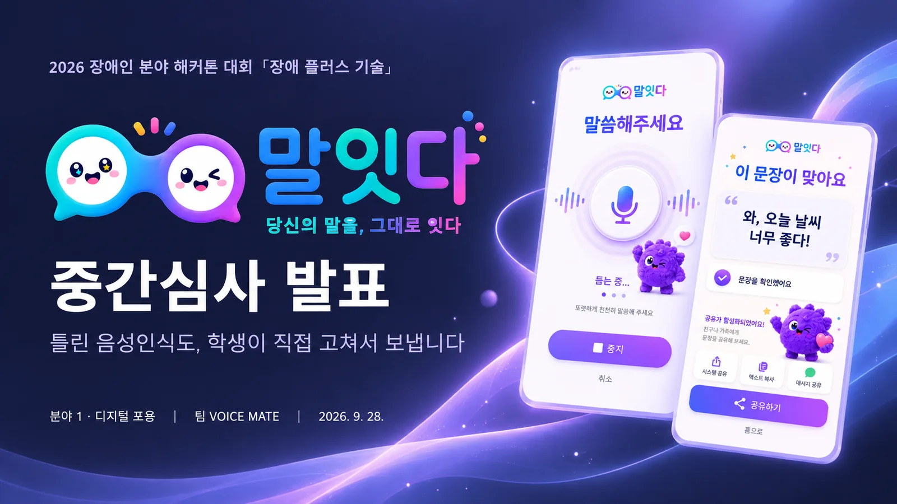
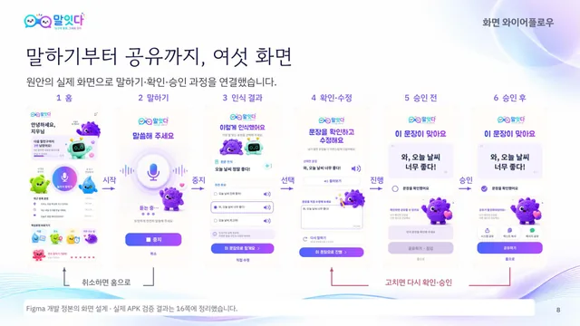
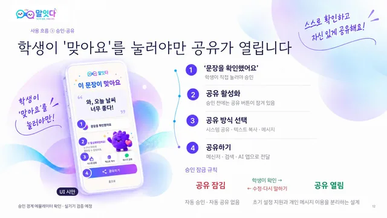
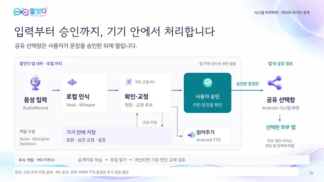

AI 서비스 기획 / 공공·정책 / 디지털 포용·특수교육
말잇다 · VOICE MATE
Malitda — On-device Speech Recognition with Student Approval
학생이 음성인식 문장을 직접 확인·수정·승인한 뒤 공유하는 앱
현재 상태가상기기 시험 단계 · 사용성 실증 전
- 기간
- 2026 (본선 진출 08.19 · 중간심사 자료 제출 09.27 · 최종 제출 10.28 예정 · 최종심사·시상 11.10 예정)
- 팀
- 팀 VOICE MATE
- 내 역할
- 중간심사 발표 · 기획 참여
- 도구
- 수상
- 수상 확정 · 최종 상격 미정
내 기여중간심사 10분 발표·대본 작성·첨삭과 기획에 참여하고, 피드백을 반영해 서비스 설계도·와이어프레임·목업 정리와 UI/UX 수정을 조율했습니다. 앱은 팀이 구현했고, 제 GitHub 저장소는 팀 저장소의 fork입니다.
사진·화면


크게 보기
크게 보기말하기부터 공유까지 여섯 화면 흐름출처팀 자료 
크게 보기학생이 '맞아요'를 눌러야 공유가 열리는 승인 화면출처팀 자료 
크게 보기입력부터 승인까지 기기 안에서 처리하는 구조출처팀 자료


문제
음성인식이 틀렸을 때 학생이 교정을 다른 사람에게 맡겨야 하는 상황에 주목했습니다. 학생이 문장을 직접 확인·수정·승인하고 공유하는 흐름을 기획했습니다.
접근
- 3원칙: 인식 원문 보존 · 보낼 문장은 학생이 승인 · 음성인식은 기기 안에서 처리
- 흐름: 말하기 → 결과 선택(원문 + 후보 최대 3) → 확인·수정 → 승인 → Android 공유
- 승인 교정 재사용(M1): 이전에 고치고 승인한 문장을 후보로 다시 제시
- 평가 도구: CER·WER·완전일치·Top-3·무응답·처리시간 기록
핵심 판단
승인해야만 공유 버튼이 열리고, 승인 후 문장을 고치면 다시 잠금
M1은 목소리 학습이 아니라 승인된 교정 문장을 다시 제시하는 기능으로 범위 한정
결과
- 가상기기 시험11/13 통과에뮬레이터 13개 항목 시험
- 수정한 앱의 가상기기 시험 13개 항목 중 11개 통과
- 남은 과제 2개: 짧은 화면의 하단 버튼 가림, 버전 표시 불일치
- 복지관에서 아이디어·디자인을 소개하고 전문가 면담 진행
- 2026 장애인 분야 해커톤 디지털 포용 분야 본선 진출
AI 활용
앱에 인터넷 권한을 두지 않고 whisper.cpp·Vosk 한국어 모델로 음성을 처리합니다. 인식 원문과 후보를 함께 보여 주며, 최종 문장은 학생이 승인합니다.
한계와 다음 단계
11/13 통과는 가상기기(에뮬레이터) 시험 결과입니다. 실기기 성능·당사자 사용 효과·M1 반복 효과·기존 도구와의 차별성은 사용성 실증 과제입니다.